|
Originariamente era un túmulo
antiguo que recordaba el acontecimiento de la desaparición de Rómulo. Su
construcción data del 27 a.e.c obra de Marco Agripa, pero el edificio
actual es obra de Adriano que situó una inscripción en el pórtico
señalando que fue erigido por Agripa. Realizado de opus caementicium sobre un armazón de madera. Es la mayor cúpula del mundo construida con este sistema. Es perfectamente esférica y se apoya sobre un muro cilíndrico de seis metros de espesor. La claraboya es la única fuente de luz. La lluvia penetra en su interior pero es evacuada por sumideros en el pavimento. La
fachada es la clásica octóstila con triple hilera de 8 columnas de
granito gris y capiteles corintios rematados por un frontón. Las
tres columnas del lateral izquierdo son de una reforma del siglo XVII, provenientes de otros templos romanos. El interior es una superficie circular con una cúpula de 43m abierta en su zona central con un diámetro de 8,92m. La esfera que determina la bóveda semiesférica, se apoya sobre un el cilindro, que tiene un radio de 21,60m, correspondiendo al radio del cilindro y de la altura. La parte inferior está compuesta por nichos redondos y rectangulares alternos donde estaban colocadas las figuras de los dioses y la superior estaba decorada con incrustaciones de bronce. Los casetones de la cúpula, antiguamente estucados y se cree que adornados con estrellas, van reduciendo su tamaño a medida que avanzan hasta el centro, acentuando el efecto de la perspectiva.
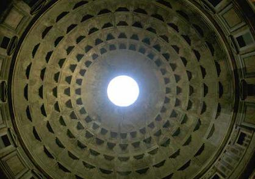
Conserva todavía su pavimento antiguo de
mármol y restos de policromía sobre los relieves del pórtico. En abril de 2020 bajo el Panteón gracias a un socavón fortuito en la plaza de la Rotonda, nos permite redescubrir el pavimento original de la época del emperador Adriano.
Ara Pacis El Ara Pacis fue el altar erigido por Augusto a la diosa de la Paz, entre los años 13 y 9 a.e.c., en el Campo de Marte, para glorificar la grandeza del Estado romano. Es una estructura rectangular en mármol de Carrara, dentro del cual a través de uno escalones se accede al altar, conmemorativo de la victoria en la Galia y España. Tiene bajorrelieves mitológicos del nacimiento de Roma, la procesión del Emperador y su familia, e imágenes de Augusto, Agripa, Julio Cesar y Tiberio y una reproducción en bronce de Augusto.
En el templo de Augusto en Ankara se conserva una inscripción, llamada el "testamento de Augusto" en el que expresamente se dice: "A mi vuelta de la Hispania y de la Galia, después de haber pacificado por completo aquellas provincias, el Senado decretó que en acción de gracias por mi regreso feliz, se erigiera un altar a la Diosa de la Paz en el Campo de Marte, al que cada año acudirán los oficiales y sacerdotes y las vírgenes vestales, para celebrar un sacrificio". Desde el siglo XVI se conservaban bastantes restos del altar distribuidos en varios museos europeos, Louvre, Florencia, Vaticano, Viena y en el propio palacio Ficno de Roma, en la Vía Flaminia. En la excavación se encontraron una gran cantidad de restos, e incluso los cimientos de lo que debió de ser el basamento del Ara Pacis. Hoy está reconstruido en el Tíber y se cree que corresponde con bastante exactitud a la forma general del monumento y sus dimensiones: el altar propiamente dicho estaba circundado por un muro que formaba un área cuadrada de 14 x 12 x 6 m, adornado por dentro con abundantes guirnaldas de laureles, flores y frutos sostenidos por bucranios y escenas de sacrificios rituales en los frisos de los laterales; las fachadas exteriores, estaban decoradas con roleos de acanto y de hojas, en el nivel inferior, la procesión de la familia imperial y del "Senatus Populusque Romanus". El Templo de Adriano se halla en piazza di
Pietra. El Hadrianeum fue construido en 145 en honor del emperador Adriano
por su sucesor Antonino Pío.
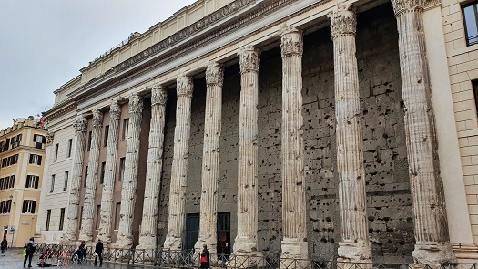
Templo de Rómulo
El Templo de Rómulo data del 309, fue dedicado a Valerio Rómulo, hijo divinizado de Majencio. Actualmente se cree que es de época de Constantino y que debía estar consagrado a los Penates. El templo se halla en muy buen estado, en el siglo VII se convirtió en el vestíbulo de entrada de la iglesia de san Cosme y san Damián. Destaca el portón de bronce de la entrada enmarcado entre dos columnas de pórfido y un rico entablamento de mármol. Se dice que la cerradura después de dieciocho siglos se halla en buen uso.
Vicus Ad Carinas El vicus era una de las
rutas más antiguas de Roma. Desde la época republicana había conectado
el barrio de Carinae en la colina Esquilina, con el Foro, cruzando la
Vía Sacra, que data del siglo IV, entre el llamado Templo de Rómulo y la
Basílica de Majencio. Permaneció en uso durante toda la antigüedad. Su
ruta actual es posterior al incendio del 64 y la construcción, en el 75,
del Templo de la Paz. Los arquitectos que diseñaron la Basílica de
Majencio en el siglo IV, no interrumpieron el camino, que continuó a
través de un túnel insertado en la esquina norte del nuevo edificio.
Desde la época Flavia (69-96) y hasta la construcción de la Basílica, el
vicus estaba bordeado de tabernae. Se han conservado algunas de ellas.
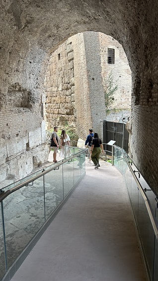
Templo de la Paz El Templo de la Paz o Foro
de la Paz (en latín, templum Pacis o forum Pacis) es uno de los Foros
Imperiales de Roma, También conocido comol Foro de Vespasiano -Forum
Vespasiani-, el tercero en orden cronológico. El hecho de que esta
estructura no se haya mencionado que tuviera una función civil es lo que
ha impedido que fuese clasificado como un verdadero foro. Antiguamente
esta estructura era llamada simplemente Templo de la Paz. A partir de la
época de Constantino I, fue definido por sus contemporáneos como una de
las maravillas del mundo.
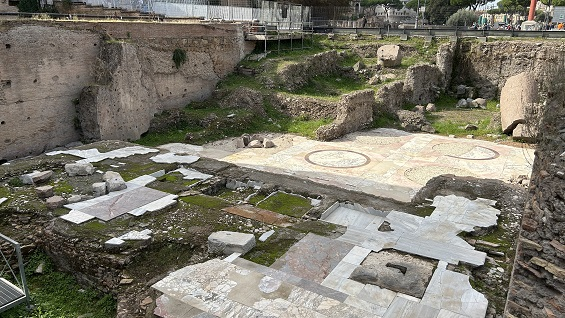
Cosiddetto Carcer Las tres pequeñas habitaciones que se abren a un pasillo con paredes hechas de grandes bloques de tofa y marcos de puertas y ventanas de travertino, generalmente se atribuyen a un Cárcel; esto es un error, ya que la tradición atestigua la existencia de una sola prisión en Roma, el Tullianum en las laderas del Capitolio. Considerado por algunos como un burdel, estas son probablemente las habitaciones de servicio de una casa romana, tal vez utilizadas como bodega o para esclavos domésticos.
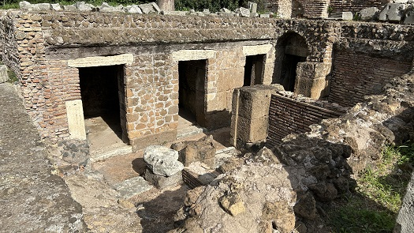
Templo de Julio César Divus Iulius.
Fue construido por Augusto en el 29 a.e.c, en honor a su padre
adoptivo el divinizado Julio César. En el hueco del podium se hallan
los restos del altar circular erigido posiblemente en el mismo lugar
donde fue incinerado su cuerpo la noche del 15 de marzo de 44 a.e.c.
Templo y Domus de Vesta
Construido inicialmente por Tito, fue Domiciano en el 81 quien concluyó la obra, en honor de su padre Vespasiano y de su hermano Tito. Posteriormente fue restaurado por Séptimio Severo y Caracalla. Se halla entre los templos de Saturno y la Concordia. Por la falta de espacio es más ancho que largo 23mx33m y la escalinata se encuentra encerrada entre las seis columnas del pronaos, de orden corintio y con una altura de 15,70 metros, tres de las cuales, en el ángulo del edificio, han perdurado hasta la actualidad.
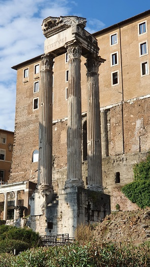
Fue erigido por Camilio en le 367 a.e.c para conmemorar el pacto entre los patricios y los plebeyos. Ha sido destruido y restaurado varias, la última restauración, entre los años 7 y 10 a.e.c.
El templo estaba situado en la colina Palatina, fue el primero edificado por el Emperador César Augusto en honor al dios Apolo y el segundo dedicado a este dios en Roma después del templo de Apolo Sosianus. El templo estaba situado al lado del templo de Cibeles en el Palatino. El recinto del templo era una terraza artificial (70 x 30 m), apoyado en las subestructuras de opus quadratum.
Templo de Cástor y Pólux Templo de Cástor y Pólux (Dioscuros), fue construido por Aulo Postumio Albino en el 484 a.e.c, respetando el voto realizado por su padre durante la batalla junto al lago Regilio en el 496 a.e.c. Narra la leyenda de los gemelos durante la batalla en la que condujeron a los romanos hacia la victoria contra los Tarquinos y los Latinos. En el lugar donde bebieron sus caballos al llegar a la ciudad, junto a la fuente Yuturna, fue erigido el templo de Castor y Pólux. En tiempos de República, ocasionalmente se celebraban en este templo las reuniones del Senado y a partir de mediados del siglo II a.e.c, el podio se convirtió en tribuna para magistrados y oradores durante los comicios que tenían lugar en esta parte de la plaza del Foro.
Templo de Venus y Roma
En la edad media fue despojado de sus
revestimientos. Las tejas de bronce dorado fueron expoliadas por el Papa
Honorio I para la primitiva basílica de san Pedro. Fue destruido por un
incendio a principios en el siglo IX y convertido en la iglesia de santa
María Francesca romana.
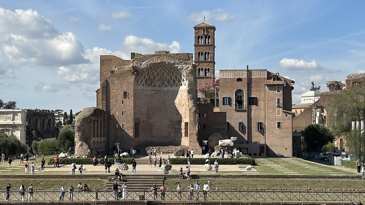 Templo de Hércules Víctor Se halla en el Foro Boario. Es un
monóptero, templo redondo de diseño peristílico griego (completamente
rodeado por columnas). Interpretado erróneamente por un templo de Vesta.
Templo de Portunus Tradicionalmente ha sido
considerado como el templo de la Fortuna Viril, pero hoy en día se piensa
que estuvo dedicado a Portuno, divinidad protectora del puerto fluvial,
siendo es uno de los edificios mejor conservados de Roma.
Se asienta sobre un podium
sobre el que se levantan las columnas y pilares, a él se accede a través
de una escalinata frontal. Es un templo jónico tetrástilo, de influencia
etrusca. 4 columnas en el frente y 7 en los lados. De las volutas de sus
capiteles salen unas palmetas curvadas que decoran el cimacio, y en la
basa tiene la particularidad de emplear el plinto adicional bajo la basa
de moldura ática. Por la distribución de sus elementos sustentantes se
puede considerar como un templo seudo períptero, las columnas que lo
rodean por sus fachadas laterales y posterior están adosadas al muro de la
cella, que lo diferencia del estilo griego. En la escalinata de acceso las
columnas forman un pórtico abierto, a modo de pronaos. El arquitrabe y el
friso del entablamento están formados por sillares en forma de cuña de
manera que encajan los unos en los otros como si se tratase de un arco
adintelado. Sus columnas acanaladas son de travertino recubierto de una
gruesa capa de estuco.
Templo de Apolo Sosiano El Templo se halla junto al Teatro de Marcelo. Se conservan tres columnas corintias de 14m, muy reconstruidas con acanaladuras anchas y estrechas alternativamente y parte del friso. Se puede apreciar el límite del pódium. El templo de Apolo medico, fue erigido en el 431 a.e.c, restaurado en el 353 a.e.c y reconstruido en el 34 a.e.c. por el cónsul C. Sosius.
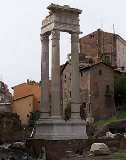
Templo de Belona El templo a la diosa Belona está situado junto al templo de Apolo Sosiano y el teatro de Marcelo. Su construcción se debió a Apio Claudio Ceco. Los restos que pueden verse hoy en día pertenecen a una reconstrucción en el período de Augusto con la transformación de la zona durante la construcción del teatro. Sus restos son escasos, sabemos como era gracias a la información proporcionada por el Forma Urbis.
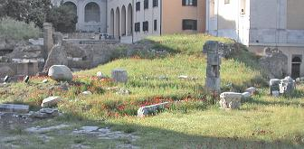
Iglesia de San Nicola en Carcere
Los restos de los templos se han
integrado en la fachada de la iglesia. Actualmente, de los tres
templos del foro Holitorium, son visibles en parte de los restos
encontrados en el sótano de la iglesia y algunas partes de las
columnas. Fuera de la iglesia en el lado sur, se pueden ver seis
columnas del primer templo dedicado en 254 a.e.c a la Esperanza.
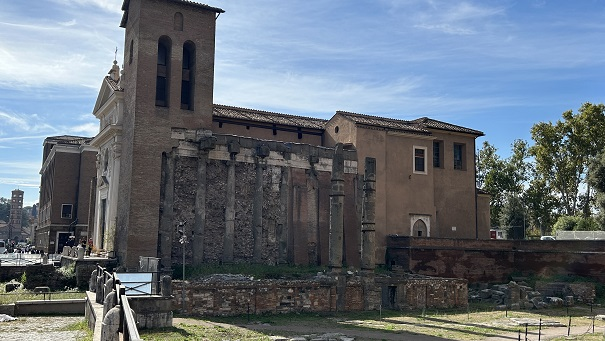
Templos Republicanos
En plaza de Largo di Torre
Argentina, se localizan cuatro templos de la victoria de época
republicana, y los restos del Teatro de Pompeyo. Los generales esperaban
en esta zona el permiso del Senado para poder celebrar el triunfo. Se
localizan en el antiguo Campo de Marte. Los cuatro templos, daban a una
calzada reconstruida en la época imperial, después del incendio del año
80. Templo de Juno Moneta El Templo dedicado a Juno, construido en la cumbre norte del capitolio. Donde se encontraba el templo de Juno Moneta se levantó durante la edad media la Iglesia de Santa Maria de Ara Coeli. El término moneda proviene de la casa anexa al templo en donde se acuñaban oficialmente las monedas en Roma.
Templo de Claudio El Templo del Divino Claudio se encuentra en el lado norte de la colina Celio, se construyó en honor del emperador, en el 54 tras su muerte, a instancias de su esposa Agripina menor.
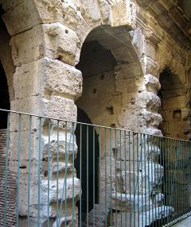
Templo de Minerva El llamado Templo de Minerva Médica era un ninfeo de Horti Liciniani. Se halla en la vía Giolitti. Data del siglo IV.
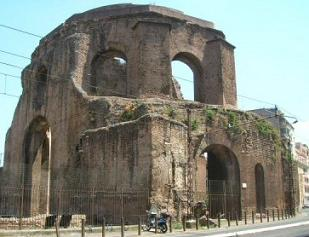
|
|||||||||||||||||||||||||||||||||